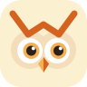
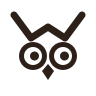
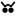
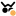
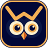

OWL
MARCA · V2
OWL
MARCA · V2
A CORUJA QUE VIGIA
 v1
v2
v1
v2
Mesma coruja, agora com rosto.
O sobrolho em W continua sendo a assinatura. Ganhou disco facial (dois círculos sobrepostos, um nível de superfície acima do fundo), íris âmbar, bico facetado em âmbar + brasa e um olhar que se mexe — é o olhar que conta o estado.
v2
ANATOMIA · GRADE 96
SobrolhoW de 5 pontos, traço 7, pontas e junções redondas. Os tufos são as pontas externas.
Disco facial2 círculos r21 em x33/x63. Cor = --c-panel: some no app, aparece no ícone.
OlhosEsclera r14, íris r9, pupila r5,5, brilho r2. Pupila deslocada 1,5 para a direita: está olhando.
BicoLosango facetado: metade âmbar, metade brasa (#D4631F, só marca).
16 · glifo
24324896
claro
mono
ESTADOS ANIMADOS
SVG + CSS dentro do arquivo: funciona em <img>, Electron/Tauri, WebView mobile. reduced-motion → parado.PLATAFORMAS · UM ARQUIVO, CADA SISTEMA APLICA SUA MÁSCARA
macOS.icns · squircle
Windows.ico 16→256
Linuxhicolor .png/.svg
iOS1024 sem cantos
Androidadaptativo · círculo
BARRA DE MENUS / BANDEJA
Template monocromático (o sistema pinta). Ponto âmbar = há aprovação esperando você.


qui 14:32
NOTIFICAÇÃO
Desktop e celular usam o estado animado do motivo.

OWL-138 espera vocêpnpm add zod@3 — risco 2/3
ABA DO NAVEGADOR
(1) OWL · owl-orchestrator
Abaixo de 24px o disco e a íris saem: só sobrolho + olhos.
ASSINATURAS
OWLOrchestrator for Work & LLMs
OWLOrchestrator for Work & LLMs
OWL